1. 3DGS¶
1.1 前置基础¶
1.1.1 线性代数基础¶
1.1.2 高斯分布¶
- \(x=[x,y,z]^T\) 是空间中采样点。
- \(\mu=[\mu_x,\mu_y,\mu_z]^T\) 是均值向量，也是高斯球中心位置。
- \(\Sigma\) 是协方差矩阵, 半正定，控制高斯球大小，形状和朝向。
- \(G(x)\in (0,1]\) 该高斯在x处的概率密度。
- \(\frac{1}{\sqrt{(2\pi)^k|\Sigma|}}\) 是归一化因子，确保高斯分布在空间中积分为1，但3DGS一般不使用。
- \(\mathcal{N}(\mu, \sigma)\) 高斯分布就是正态分布，1 \(\sigma\) 原则：68.26% 的概率在 \(\mu \pm 1\sigma\) 内。
协方差矩阵
协方差矩阵与几何变换的关系
3DGS只是用了高斯分布的几何属性，因此这里只需要将协方差矩阵当作特殊的对称矩阵就行。
- \(\Sigma^T = \Sigma, v^T \Sigma v \geq 0\), 对称半正定。
- 一个三维协方差矩阵需要 \((\sigma_x,\sigma_y,\sigma_z,\sigma_{xy},\sigma_{xz},\sigma_{yz},\sigma_{zy},)\) 6个参数确定。
- 根据线代基础，\(\Sigma = V^T \Lambda V\)，其中\(V\)是正交矩阵，\(\Lambda\)是对角矩阵，\(V^T = V^{-1}\)， \(V\) 是旋转矩阵， \(\Lambda\) 是缩放矩阵。
高斯球
高斯球的几何属性
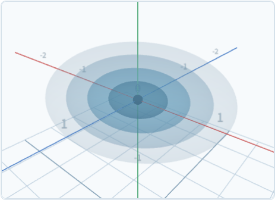
- \(G(x) = C\) 就是一个椭球壳，所以 \(G(x) \in (0,1]\) 代表一个椭球体,同时值从中心向外快速衰减。
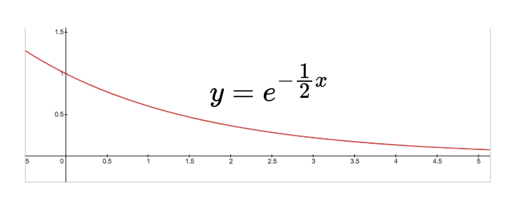
- 从图中可以看到 \(G(x)\) 是一个无限延申的函数，一般使用 \(G = e^{-k^2/2}\) 作为截断处。实际应用会有所不同。
高斯球性质
- 仿射变换高斯核仍然闭合。
- 高斯核沿着某一个轴积分降维后，仍然是高斯。
- 高斯核是一个实心椭球，每一层代表一个概率。
1.1.3 雅可比矩阵¶
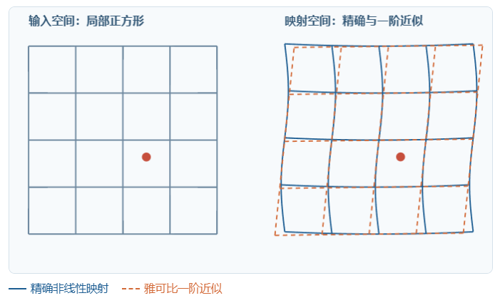
- 非线性变换会破坏函数的性质（如图上的正方形变换后变得扭曲），我们可以在局部微小空间中使用线性变换近似非线性变换（如图上橙色虚线），来保留一些性质。
球谐函数
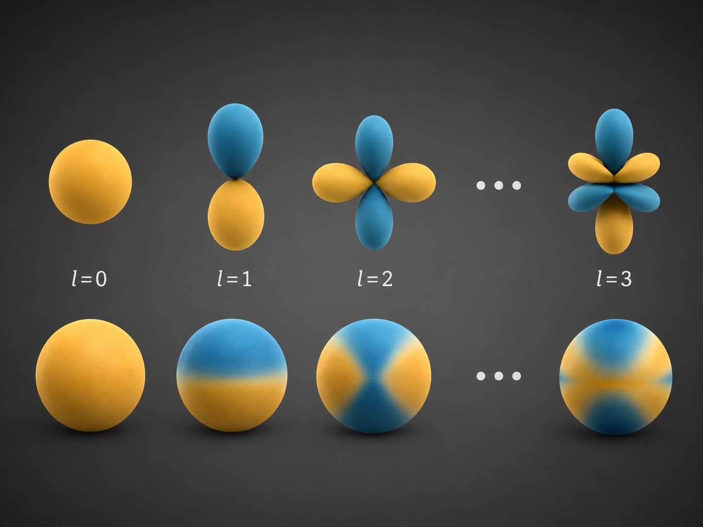
不同球谐函数对应的球面贴图
使用球谐函数可以拟合smooth的光照，系数 \(c_i\) 是球谐函数球面贴图与光照贴图的点积。
1.2 渲染过程¶
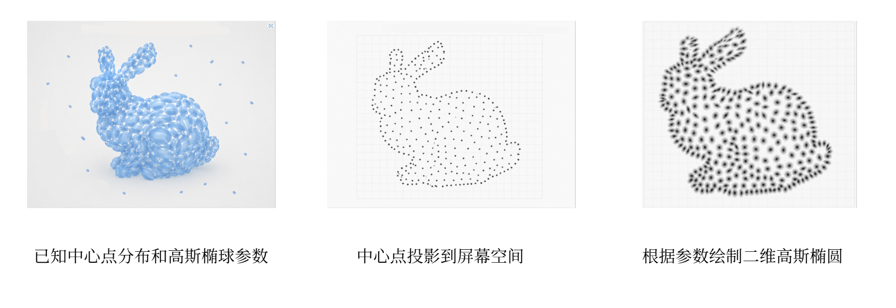
- 已知高斯中心点集合 \(\{(x_i,y_i,z_i)_{i=1}^N \}\) 以及各高斯椭球参数 \((\lambda, \mathbf{q}, \alpha, \mathbf{c})\)。
- \(\lambda = (\lambda_x, \lambda_y,\lambda_z)\) 是缩放因子，控制高斯球的大小。
- \(\mathbf{q} = (x, y, z, w)\) 是旋转参数，控制高斯球的朝向。
- \(\alpha\) 是高斯球的透明度。
- \(\mathbf{c} = (c_1,c_2,\dots,c_{16})\), 是球谐函数的系数向量，控制高斯球的光照。
- 将高斯椭球中心投影变换到屏幕空间，剔除屏幕外的高斯球。
- 计算每个高斯椭球的协方差矩阵 \(\Sigma\) ，将高斯椭球投影到屏幕空间，然后经过雅可比变换得到二维高斯椭圆。
- 光栅化：每个片元按照覆盖该片元的高斯椭圆中心深度对高斯圆进行排序，从浅到深混合渲染。
- 将屏幕分为 \(16 \times 16\) 的tile, 每个高斯椭圆记录一条 \(\{tile ID : 高斯中心深度z \}\) 。
- 按照tile ID对高斯椭圆进行分组，然后每个tile计算一个深度排序列表 \([\text{Gaussian ID}_1,\dots,\text{Gaussian ID}_N]\)。
- 每个片元：按照对应tile的高斯列表，从浅到深查询，如果高斯椭圆覆盖该片元，就混合。
-
检查覆盖：高斯指数q小于阈值则抛弃。
\[ \Sigma_{2D} = \begin{bmatrix} A & B \\ B & C \end{bmatrix} \]\[ q= A(x-\mu_x)^2 + 2B(x-\mu_x)(y-\mu_y) + C(y-\mu_y)^2,(x,y,z)为片元中心屏幕空间坐标 \]\[ \alpha = \alpha_0 \exp(-\frac{q}{2}), \alpha_0 为透明度 \]- 混合逻辑：
\[ C = \sum_i T_i\alpha_i c_i, T_i = \prod_{j<i}(1-\alpha_j), c_i由相机到高斯中心的连线与球谐函数计算 \]
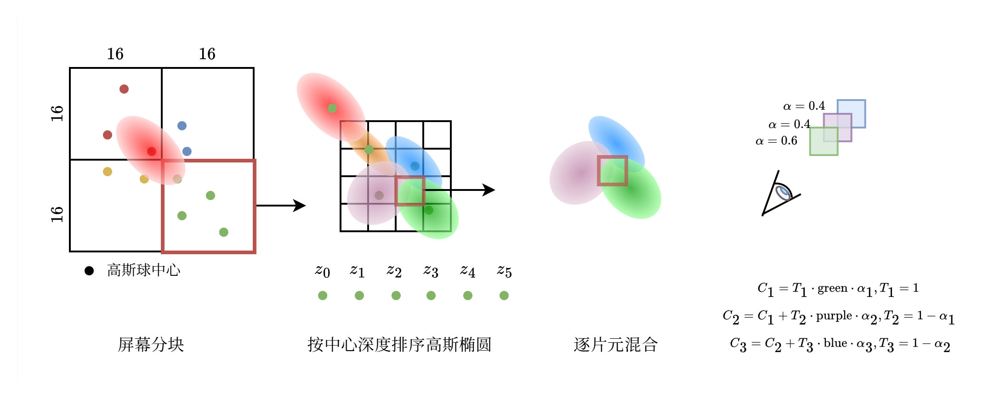
图上只做示意，并未一比一还原渲染过程。
- 经典3DGS没有考虑高斯椭球覆盖单片元的程度，没有抗锯齿。
- 高斯椭圆覆盖的所有片元使用高斯中心的颜色计算（每个高斯椭球只计算一次颜色），片元采样点只决定颜色的贡献（ \(\alpha_i\) ）。
1.3 训练过程¶
初始点云
- 使用SfM/COLMAP，从多张不同视角照片中，估计相机位姿和场景稀疏三维结构。然后随机初始化高斯椭球参数。
可微光栅化
对每一个片元：
在固定当前高斯集合、排序关系和可见性的前提下（静态场景），上述操作建立的 \((\lambda_x, \lambda_y, \lambda_z, \mu, x, y, z ,w , \alpha_0, \{k_i | i = 1,...,16\})\) 与 C 的映射关系是由矩阵乘法、指数函数和球谐基函数组合而成的连续可微映射，所以可以通过反向传播优化这些参数。
计算损失反向传播优化参数
- \(\lambda\) 通常取0.2
- SSIM：图像重建损失
训练过程
- 随机选择一个训练相机
- 渲染图像
- 计算损失
- 反向传播
- 累计可见高斯的二维中心梯度模长
- Adam更新高斯参数
- 经过固定迭代轮次后计算平均梯度
-
\[\bar{g_i} \geq \tau_g:\begin{cases} 尺度小 \to 克隆\\ 尺度大 \to 分裂 \end{cases}\]
- 删除低透明度或过大的高斯
- 清空统计，进入下一周期
高斯中心点克隆、分裂与删除
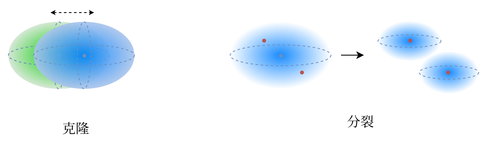
经典3DGS会设置一个增密周期，经过一个loss计算和反向传播的周期后（T轮），根据高斯中心点屏幕空间坐标梯度决定分裂与克隆
每次训练时累计梯度，记录被观察到的次数，最后计算平均梯度
设置位置梯度阈值 \(\tau_g\)和场景尺度百分比 \(\rho\)，计算场景尺度 \(E\) ，然后根据梯度大小和高斯缩放系数决定是否克隆或分裂。
\(E\) 就代表距离所有相机平均中心位置距离最远的相机距离平均中心距离的1.1倍。
- 克隆操作是在原地复制两个一模一样的高斯中心，然后让它们自己在后续的训练中逐渐分开。
-
分裂操作是在原始高斯椭球内随机采样2个点，缩放系数变换，其余参数继承，然后删除原始高斯椭球。
\[ \mu_{i,k}^\prime \sim \mathcal{N}(\mu_{i,k}, \Sigma_{i,k}) \]\[ s_{i,k}^{\prime} = \frac{s_i}{0.8N} \] -
删除操作的充分条件：\((\alpha_i < 0.005)\) || \((r_{i,\max}^{2D} > r_{\max})\) || \((\max(s_{x,i}, s_{y,i}, s_{z,i}) > 0.1E)\)
\[ \alpha_i = sigmoid(\alpha_0) \]\[ r_{i,\max}^{2D} = \max_{k} r_{i,k}^{2D}, k表示一段训练过程中的训练轮次 \]\[ r_{i}^{2D} \approx 3\sqrt{\lambda_{\max}(\Sigma_{2D,i})}:投影协方差最大特征值 \]\[ r_{\max} = 20 \text{pixel} \]
2. 2DGS¶
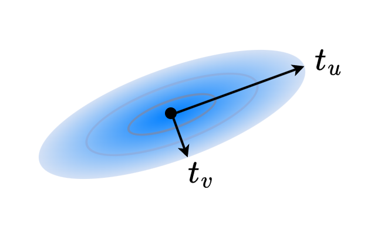
2DGS椭圆
2.1 3DGS的问题¶
几何不一致性
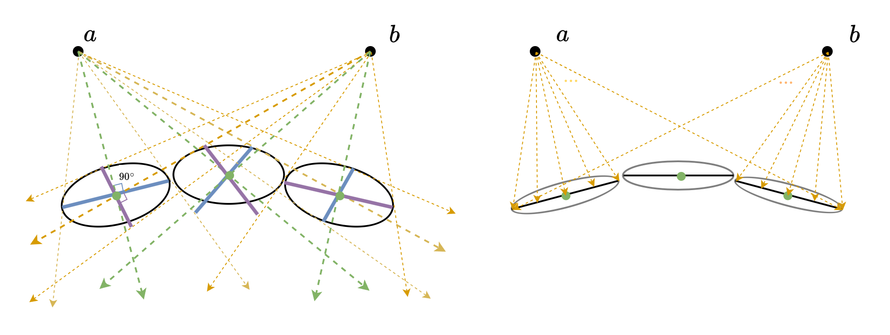
（左）3DGS预估表面情况 （右）2DGS预估表面情况
经典3DGS中，相同外观区域（一个高斯椭球或高斯椭圆面表示的区域），在不同视角渲染后，根据片元深度值反算对应的空间坐标（相机中心o+深度值*相机方向，深度=高斯中心深度），会发现反算出的表面不一致（如图上的蓝色和紫色线段，分别是a,b视角下渲染的像素反算出的空间连线）。这意味着，使用不同视角的渲染图像进行预估表面时会出现几何不一致的情况。
2DGS将高斯椭球改为高斯圆片，避免了几何不一致的问题。
总结就是：3DGS无法从渲染结果中准确恢复物体表面
2.2 渲染过程¶
- 2D高斯的表示为
- \(\mathbf{p}\)：高斯中心
- \(\mathbf{t}_{u}\) , \(\mathbf{t}_{v}\)：面片两个正交切向量。
- \(\lambda_u\), \(\lambda_v\)：两个切向量方向缩放系数。
- \(\alpha_0\)：不透明度。
- \(\{k_i | i = 1,...,16\}\)：球谐函数系数
-
2DGS使用光线求交来计算 \(G(x)\)
-
已知高斯中心集合 \(\{\mathbf{p}_i, \mathbf{t}_{u,i}, \mathbf{t}_{v,i}, \lambda_u^i, \lambda_v^i, \alpha_0^i, \{k_{ij} | j = 1,...,16\} \}\)
- 根据面片中心和局部切向基计算包围盒，投影到屏幕空间后登记tile。
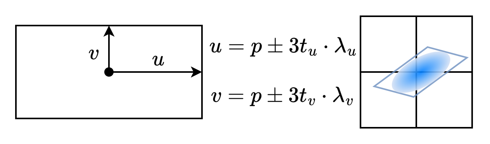
- 光栅化和3DGS相似，也会按照高斯面片中心深度进行排序，然后由浅到深进行射线求交计算不透明度，然后混合。
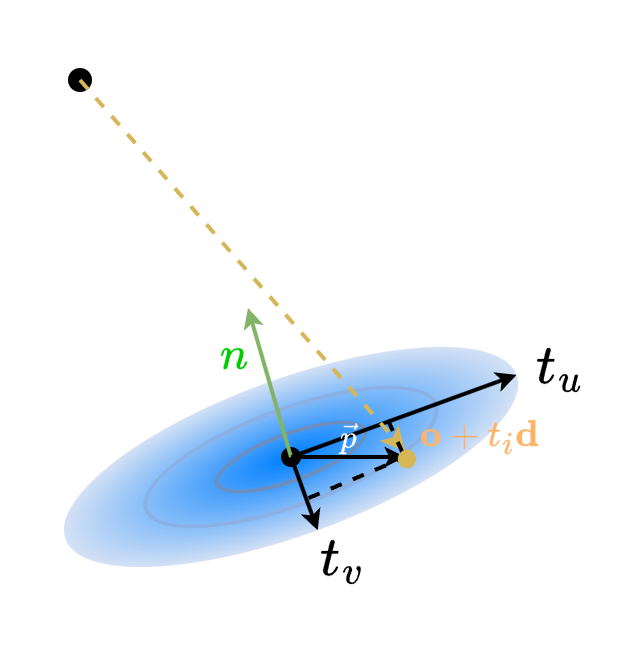
射线求交
- 2DGS可以计算预估深度和法线
2.3 训练过程¶
- 2DGS的训练过程和3DGS相同，只是损失函数不同
- 深度畸变损失：对高斯分散程度的惩罚
- 法线一致性损失：对高斯分散程度的惩罚
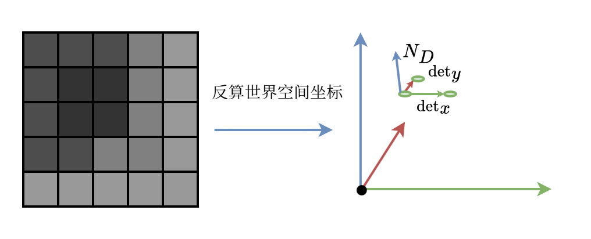
根据计算出来的相机深度图像，反算世界空间坐标点，然后根据x，y轴梯度向量计算法线。
2DGS引入深度畸变和法线一致性作为几何正则，训练面片贴合物体表面
2DGS在透明和半透明物体的拟合上稍弱于3DGS，但经典3DGS效果也不是很理想
3. 4DGS¶
4DGS使用MLP拟合高斯椭球参数随时间的变化
- \(\Delta \mu = (\Delta \mu_x, \Delta \mu_y, \Delta \mu_z)\)：高斯中心变化
- \(\Delta \mathbf{q} = (\Delta x, \Delta y, \Delta z, \Delta w)\)：高斯椭球方向变化
- \(\Delta \mathbf{s} = (\Delta s_x, \Delta s_y, \Delta s_z)\)：高斯椭球缩放系数变化
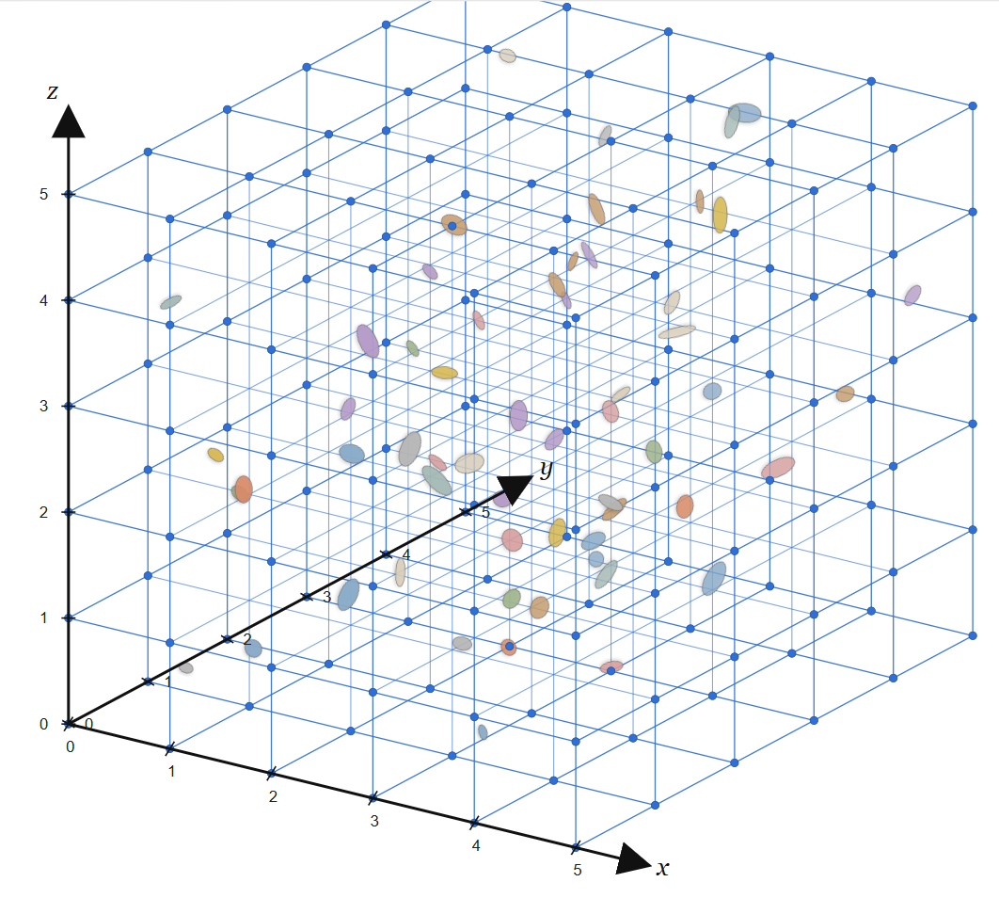
三维空间中每一帧的高斯椭球中心都对应一个参数变化特征 \(\Delta G\)
使用一个函数表示特定时间 \(t\) 下空间中每一个点的 \(\Delta G\) ：
4DGS的基本思想就是训练一个MLP能够拟合这个函数。